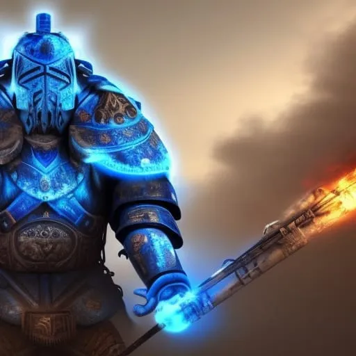

Once upon a time, in a world where esports were everything, there was a team of elite gamers who believed in something called "Bilaragão". This was a mysterious entity that they believed was the source of their incredible gaming abilities. The team, known as "Los Guapos", had become one of the most feared and respected team in the esports world.
But as their fame grew, so too did the jealousy and envy of other teams. The Bilaragao Believers were persecuted for their beliefs, with other teams refusing to play against them and tournaments refusing to allow them to compete. The Believers were determined to prove their abilities and the existence of Bilaragao, so they set out on a journey to compete in underground tournaments and prove their worth.
Despite the challenges they faced, the Bilaragao Believers never gave up. They continued to practice and hone their skills, always searching for ways to improve their knowledge of the Bilaragao powers. And in the end, their persistence paid off. They won tournament after tournament, and their victories could not be denied. The other teams began to see the truth, and the Bilaragao Believers were finally accepted for who they were and what they believed in.
The Bilaragao Believers had succeeded in changing the world of esports forever, and they had proven that belief in something greater than oneself can overcome any obstacle.
